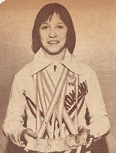

Cristina Grigoras (ROM)
1981 European V Champion and AA Silver
Medalist

Grigoras displays her 1981 European
Championships medals.
Medal Total
- Olympic Games: 1 Gold, 1
Silver
- World Cup: 1 Bronze
- European Championships: 1
Gold, 2 Silver, 1 Bronze
Cristina was born on February 11, 1966 in Satu Mare. She began gymnastics in 1972. When she was named to the national team, she trained at CSS Cetate Deva. Her coaches were Bela and Marta Karolyi, and then Adrian Goreac, Adrian Stan, and Maria Cosma.
Competition Results
- 1978
Gymnastics Schools Championships: 1st Team, 1st AA (category IV)
Romanian Championships: 3rd Team, 1st V, 1st B (category IV)
1979
- Gymnastics Schools Championships: 2nd AA (category II)
Gymnastics Schools Regional Championships: 1st AA
Jr. Balkan Championships: 1st Team, 2nd AA, 1st UB, 1st FX, 2nd V
Jr. GDR-ROM Dual Meet: 1st Team, 1st AA, 1st V, 1st UB, 1st B, 1st FX
Jr. Romanian national team selection meet: 1st AA
Romanian Cup: 1st AA, 1st V, 1st UB, 1st B, 1st FX (category III)
-
- 1980
- ITA-ROM Dual Meet: 1st Team, 2nd AA
- World Cup: 4th AA, 3rd V, 5th FX, 8th
B
- Olympic Games: 2nd Team, 15th AA
(prelims)
-
- 1981
- Balkan Championships: 1st Team, 1st AA
- Champions All: 1st AA
- Daciada: 1st Team, 1st AA, 1st UB, 2nd B, 2nd FX, 3rd V
European Championships: 2nd AA, 1st V, 2nd UB,
3rd FX, 8th B
- International Championships of Romania: 1st AA, 1st V, 1st UB, 1st B, 3rd FX
- Milan Grand Prix: 3rd AA, 1st V, 1st B
- ROM Championships: 4th AA, 1st V
Rome Grand Prix: 4th AA
- World Championships: 4th Team, 5th AA, 5th UB
-
- 1982
- Romanian Cup: 1st AA, 1st V, 3rd UB
- Romanian Championships: 4th AA, 1st V
- 1983
- FRG-ROM Dual Meet: 1st Team, 6th AA
- GBR-ROM Dual Meet: 1st Team, 7th AA
-
- 1984
- 40th Anniversary Cup: 4th AA
- Balkan Championships: 1st Team, 4th AA
- Bordeaux Grand Prix: 3rd AA
- Coca-Cola International: 2nd AA
- ESP-ROM Dual Meet: 1st Team, 3rd AA
- FRG-ROM-HUN Meet: 1st Team, 4th AA
- Hungarian International: 3rd AA, 1st FX, 2nd B, 3rd V
- Olympic Games: 1st Team, 8th AA
(prelims)
-
- 1985
- HOL-ROM Dual Meet: 1st Team, 4th AA
This page was last updated on June 1, 2026.
© Gymn Forum